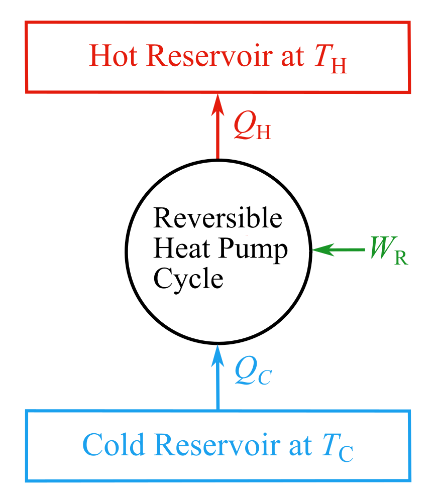

Coefficient of performance of reversible heat pump cycles working between given hot and cold reservoirs
\(\displaystyle \gamma = \frac{Q_H}{W_R} = \frac{Q_H}{Q_H - Q_C} = \frac{T_H}{T_H - T_C}\)
Symbols
- \(\gamma\) — coefficient of performance of reversible heat pump cycle
- \(Q_H\) — heat rejection to hot reservoir
- \(Q_C\) — heat absorption from cold reservoir
- \(W_R\) — work input to reversible heat pump cycle
- \(T_H\) — thermodynamic temperature of the hot reservoir
- \(T_C\) — thermodynamic temperature of the cold reservoir
Schematic

Inputs & Outputs
γ (-)
—
Plot
The plot shows γ vs TH for different TC values. The red dot marks the current operating point for the input TC value's curve — drag it or use the TH slider above to see how γ changes as TH changes at the current input TC value.